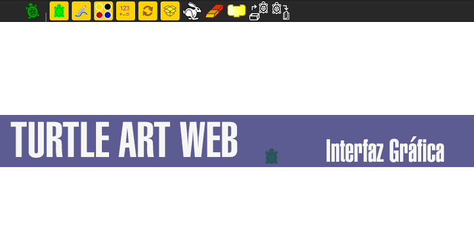
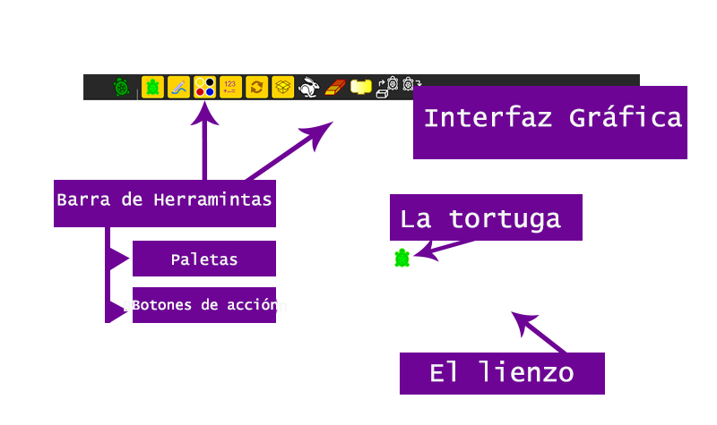

En este primer tutorial se muestra la estructura básica de la aplicación, las partes que la conforman y como estas funcionan.
Turtle Art es una aplicación que permite dibujar por medio del control de una tortuga usando bloques. Dependiendo que quieras dibujar y como lo quieras dibujar, así serán los bloques que debes usar.
La interfaz de la aplicación Turtle Art es bien sencilla, tiene una barra de herramientas que posee las diferentes paletas de las funciones a dar a la tortuga, los botones de acción y el lienzo donde estarán los dibujos.
La Barra de herramientas: Es un rectangulo negro ubicado en la parte superior de la App, el cual contiene todas las funciones y acciones que manejan la tortuga y el lienzo. Dentro hay dos menú, los cuales son:
* Las paletas: Las paletas estan a cargo de todas las funciones que la tortuga pueda realizar, como acciones de dibujo, el movimiento de la tortuga y configuración de colores.
* Botones de acción: Estos botones estan a cargo de acciones que el usuario haga con la aplicación, asi como Guardar archivo, Abrir archivo o ejecutar archivo.
La Tortuga: Es la pequeña imagen verde de una tortuga que se encuentra sobre el lienzo. La tortuga es como el lapiz/marcador/brocha/etc. en el lienzo y tu solo tienes que darle ordenes.
The Canvas: El lienzo es toda la parte blanca detrás de la tortuga, es la parte que muestra todo lo que el usuario haya dibujado.
El conejo (ejecutar archivo) :)Al presionar este botón, la aplicación ejecutará todos los bloques que el usuario haya unido para crear su dibujo.
The Eraser:Después de haber presionado este botón, la aplicación borrará todo lo que haya sido dibujado en el lienzo por el usuario. Esto afectará solamente a cualquier dibujo sobre el lienzo, no afectará ninguno de los bloques que hayan sido elegidos.
El bloque:Este botón hará visible o no visible los bloques despues de haber sido presionado. No cambiará nada en los bloques.
Open: Con esta opción puedes abrir proyectos que hayan sido previamente guardados, sin importar si son de la versión Turtle Art Web o de la version de Turtle Art de escritorio.
Save: Con esta opción puedes guardar tus proyectos que has estado trabajando.
Las Paletas ... continua en tutorial 2